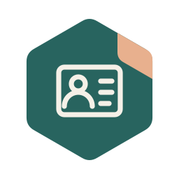
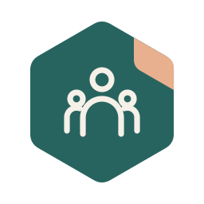
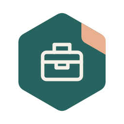
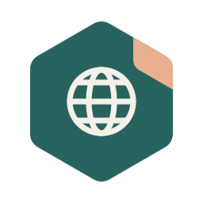

Nuværende arbejdsplads: Jobsøgende
Hvor er jeg om 5 år?
Mit bedste bud er, at jeg om fem år arbejder med unge, der har det svært, og lærer dem om lokal produktion – både digitalt og fysisk. 3D-print, CNC og almindeligt håndværk, men også ADL-færdigheder, diagnoseforståelse og det at få en hverdag til at hænge sammen.
Derfor søger jeg ikke kun én bestemt jobtitel. Jeg søger roller, der kan gøre mig dygtigere til forskellige dele af den opgave.
“Ronaldo til spansk fodbold?! Han kommer da til at falde helt igennem der.”
– Søren Frost Staal, 2008
Mine langtidsprognoser holder ikke altid. Så jeg tager nogle skridt i den retning, jeg gerne vil, og er åben for, at livet kan tage et uventet sving undervejs.
De 3 arbejdsfaglige spor jeg søger indenfor
 Spor 1: Socialfagligt og pædagogik
Spor 1: Socialfagligt og pædagogik
Mine kompetencer
Jeg er god til at forklare ting, så de er til at forstå, og dele en stor opgave op i mindre bidder. Jeg har personlig indsigt i diagnoseforståelse og ADL, altså de ting, der skal til for at få hverdagen til at fungere. Jeg har ikke en socialfaglig uddannelse.
Det har mine roller lært mig
Jeg har mødt mange forskellige mennesker gennem salg og kundekontakt. Det har lært mig at spørge ind og høre efter, før jeg begynder at komme med løsninger. Og at noget godt kan virke fint på papiret og være svært at bruge i praksis.
Det kan jeg bidrage med
Jeg vil gerne lave praktiske ting sammen med andre og lære fra mig undervejs. Det kan være 3D-print, at bygge noget eller finde en måde at gøre en opgave mere overskuelig på. Noget, man kan prøve sig frem med og se et resultat af.
 Spor 2: Håndværk og produktion
Spor 2: Håndværk og produktion
Mine kompetencer
Jeg arbejder med CAD, Blender, FreeCAD og 3D-print og bygger selv prototyperne. Med Array-lampeskærmen har jeg blandt andet arbejdet med egetræ, messing, magneter, slibning og maling. CNC vil jeg også gerne blive bedre til.
Det har mine roller lært mig
En model kan se rigtig fin ud på skærmen. Så skal den lige kunne samles i virkeligheden også. Mine egne projekter har givet mig en del øvelse i at prøve, rette og prøve igen og få styr på mål, materialer, sikkerhed og finish.
Det kan jeg bidrage med
Jeg kan tegne, printe, samle og finde ud af, hvorfor noget ikke passer. Jeg vil gerne arbejde med lokal produktion og mindre serier, hvor jeg både kan være med ved computeren og ved arbejdsbordet.
 Spor 3: Data, processer og digitale værktøjer
Spor 3: Data, processer og digitale værktøjer
Mine kompetencer
Jeg har arbejdet med produktdata, datarens og dokumentation og med værktøjer som M365, Power BI, Power Apps, Sertica og GLUU.biz. D365 har jeg kun arbejdet med i et par måneder. Jeg bygger også egne webværktøjer og Goldfish til FreeCAD og har arbejdet med et konfigurator-koncept i Unreal Engine.
Det har mine roller lært mig
Da jeg lavede en hazard-log i Health and Safety, ville kollegerne gerne kunne tilføje billeder. Det kunne jeg ikke få til at fungere i Forms dengang. Så jeg prøvede Power Apps i stedet. Det blev en løsning, fordi vi tog udgangspunkt i det, folk faktisk havde brug for.
Det kan jeg bidrage med
Jeg kan gå på opdagelse i et system, rydde op i data og beskrive, hvordan tingene hænger sammen. Og bygge et værktøj, hvis det kan gøre arbejdet lettere. Jeg vil gerne ende med noget, andre kan bruge og arbejde videre med.

Profil/CV
 ErhvervserfaringMine tidligere arbejdspladser og opgaver
ErhvervserfaringMine tidligere arbejdspladser og opgaver
 Nova Components · Nova Creations2026
Nova Components · Nova Creations2026
Salg og kundekontakt samt arbejde med M365, Power Platform, produktdata og digitale arbejdsgange.
 StøtteCompagniet (Humana)2023–2025
StøtteCompagniet (Humana)2023–2025
Støttekontaktperson.
 Amcor Randers (Berry Superfos)2017–2026
Amcor Randers (Berry Superfos)2017–2026
Hos Superfos arbejdede jeg blandt andet med interne investeringsansøgninger. Jeg brugte PowerPoint og 3D-renderinger til at forklare komplicerede projekter, så de var lettere at forstå og tage stilling til. Vi fik blandt andet et stort investeringsprojekt i Randers igennem efter flere års arbejde. Det var jeg stolt af.
I et sygdomsvikariat i Health and Safety arbejdede jeg også med AMU, rapportering, risikovurderinger, præsentationer og undervisning. En hazard-log begyndte jeg at lave i Microsoft Forms. Da kollegerne gerne ville kunne tilføje billeder, gik jeg videre med Power Apps og fik det til at fungere dér.
Jeg arbejdede desuden med produktdata, datarens og dokumentation. Og det var her, jeg sammen med kolleger fik prøvet at printe de første dele til min pendel og lærte en hel del om forskellen på en Blender-model og en CAD-model.
 Lampefeber A/S2015–2017
Lampefeber A/S2015–2017
Hjemmeside, økonomisystem, kataloger, tekster og nyhedsbreve samt billedredigering, 3D-modeller, projekter og øvrig markedsføring.
 Dustin A/S2014–2015
Dustin A/S2014–2015
Salg og rådgivning om IT-udstyr og digitale løsninger.
Lampefeber A/S2011–2013
Belysning, rådgivning, salg og kundekontakt.
 Expert · Randers City2008–2011
Expert · Randers City2008–2011
Forbrugerelektronik, rådgivning, salg og daglig kontakt med mange forskellige mennesker.
 XL-BYG Vorup2005–2008
XL-BYG Vorup2005–2008
Udlært og efterfølgende ansat. Byggematerialer, praktisk produktviden, rådgivning og salg.
UddannelseHHX og salgsuddannelse
- 2005–2007
- Salgsuddannelse · elev hos XL-BYG Randers
- 2001–2005
- HHX · Handelsskolen i Randers
 Det jeg kommer medDet jeg kan, og det jeg gerne vil sammen med andre
Det jeg kommer medDet jeg kan, og det jeg gerne vil sammen med andre
Jeg kan sgu nogle ting. Men noget af det, jeg bliver allermest glad for, er at lave noget sammen med andre og vise dem, at de også kan. Det kan være en fysisk ting, et program eller en forklaring, der får noget indviklet til at give mening.
Jeg kan også godt lide at blive rettet på. Hvis nogen spørger, hvorfor en del skal være så tyk, og den faktisk bliver bedre af at være tyndere, så er det jo bare fedt. Også selvom jeg lige var blevet ret glad for den første version.
Mennesker er vigtigere end resultater. Det har jeg lært noget om undervejs i mit arbejdsliv. Jeg vil gerne være et sted, hvor vi kan spørge, prøve noget af og lære sammen, og hvor det, vi laver, faktisk hjælper dem, der skal bruge det.

Andre rollerExtruda, skolebestyrelse og træner
- Extruda
- Initiativtager og udvikler
Jeg laver mine egne produkter og digitale værktøjer under navnet Extruda. Det spænder fra Array-lampeskærmen til programmer og webværktøjer, som jeg selv savner eller gerne vil prøve at bygge.
- 2022–nu
- Næstformand i skolebestyrelse
- 2021–2022
- Suppleant i skolebestyrelse
- 2021–2022
- Fodboldtræner · US Spentrup

Værktøjer og faglige områderData, 3D, CAD og digitale værktøjer
- Microsoft 365
- Power Platform
- Power BI
- Power Apps
- D365 · kort erfaring
- Sertica
- GLUU.biz
- Blender
- FreeCAD
- CAD
- 3D-print
- Unreal Engine
- Photoshop
- AI-værktøjer

SprogDansk, engelsk og tysk
Dansk · flydende · Engelsk · flydende · Tysk · grundlæggende